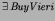

Next: Bibliographical Notes
Up: An Introduction to Z
Previous: An Introduction to Z
Page 36, near bottom: ``the above predicate" - not immediately clear it
refers to the
 predicate. Vieri being in the squad is
logically equivalent to the current state being one right after buying
him, though.
On page 45, the title of the book by Woodcock and Davies should refer to
Proof after Refinement.
E.A.Boiten
2002-11-22